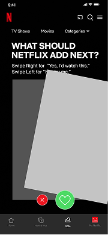
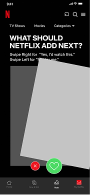
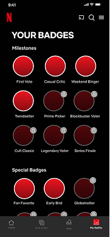
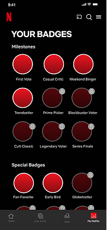
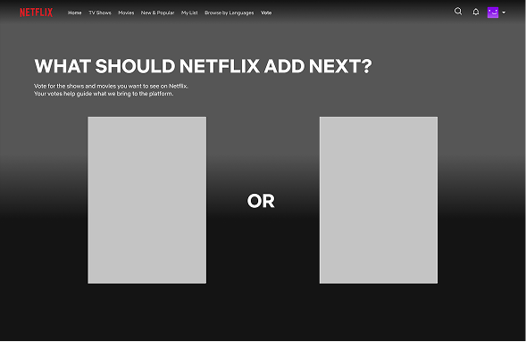
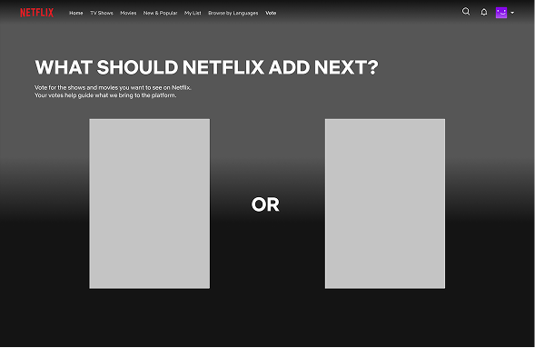

& Web Designer • Illustrator

The System Behind Netflix
Services
Systems Design, UX/UI Design,
Product Strategy
Role
Researcher, Systems Designer,
UX/UI Designer
Overview
Netflix's current model operates as a one-way content delivery system, creating friction points in user retention and content investment decisions. The Household Policy generates user frustration and churn risk, while the platform lacks direct insight into future content preferences beyond viewing patterns. Additionally, existing personalization algorithms face filter bubble limitations, restricting Netflix's ability to make strategic content investments that align with subscriber interests.
Challenge
The challenge was to map Netflix’s system, identify high-leverage intervention points that could simultaneously reduce churn, strengthen the connection between revenue and content quality, and create beneficial bidirectional information flows. The proposed intervention addresses a fundamental question: How can Netflix transform from a passive content provider into a collaborative platform where subscribers have agency in shaping the content creation process?
Research and Analysis
The research began with a comprehensive inventory of Netflix's system components, organized into three primary categories.

Establishing System Boundaries
After mapping all components, clear system boundaries were established to focus the analysis on the most critical elements affecting user engagement and content investment decisions. This boundary definition allowed me to concentrate on high-leverage intervention points while understanding how they connect to the broader Netflix ecosystem.
Mapping Flows and Feedback Loops
With components and boundaries defined, relationships between elements were mapped to understand Netflix's core flows and feedback loops. This analysis revealed critical leverage points, particularly around the Household Policy Balancing Loop and the Content Investment Reinforcing Loop.
Through systems analysis, key friction points were identified: the Household rule creates access denial leading to churn risk and lost revenue, while the platform operates as a one-way content delivery system lacking direct insight into users' future content preferences beyond viewing patterns. Additionally, existing personalization algorithms face filter bubble limitations that restrict strategic content investment decisions.


Identifying Leverage Points
The research phase focused on understanding how different system elements interact and influence each other. I identified high-leverage intervention points that could simultaneously address multiple challenges: reducing churn, strengthening the revenue-content quality connection, and creating beneficial bidirectional information flows between Netflix and subscribers.
This analysis revealed a fundamental opportunity: transforming Netflix from a passive content provider into a collaborative platform where subscribers have direct agency in shaping content creation decisions. The insights generated from this systems mapping informed the design of the community-driven voting intervention that addresses multiple leverage points simultaneously.
Ideation and Concept Development
After identifying critical leverage points in Netflix's system, rapid ideation sessions were conducted to explore multiple intervention strategies. Three primary concepts were sketched and evaluated: a community-driven content voting system allowing subscribers to influence funding decisions before production, a shared group plan for users in different locations, and customizable Netflix carousels for personalized content discovery. Through evaluation against identified leverage points, the community-driven voting system emerged as most promising for transforming Netflix's subscriber relationships while generating valuable content investment data.
Paper prototypes allowed rapid testing of core interaction flows without investment in high-fidelity design. Through informal testing, the swipe-based mobile interface was validated, as it felt intuitive and required minimal cognitive effort for the users, while the comparative TV format successfully integrated voting into existing browsing behavior without feeling intrusive.
Low-Fidelity Prototyping
To validate the community-driven voting concept, low-fidelity prototypes were developed for both mobile and TV platforms, testing how the intervention would integrate seamlessly into Netflix's existing interface while creating new opportunities for subscriber engagement.
Mobile Prototype: Swipe-Based Voting
The mobile prototype focused on creating a frictionless voting experience that would feel familiar to users. A card-based interface was created, where content appears one at a time, with users swiping right to vote "yes" or left to pass, leveraging interaction patterns already established by dating and social media apps. The lo-fi sketches helped identify the optimal information hierarchy, determining how much detail to show on each card without overwhelming users during quick voting sessions.
A dedicated badge page was designed to frame participation as progress markers and encourage continued engagement through gamification. Users can view their earned badges, track voting milestones, and see their contribution level to the Netflix community. The badge system creates visual differentiation between participation tiers to motivate users to continue voting and deepen their investment in the platform's content decisions.

 


 


TV Prototype: Comparative Voting
For the TV platform, wireframes were created for a dedicated voting section accessed through a banner on the home screen or the top navigation. On the voting page is a comparative voting interface that presents two movies/shows side-by-side, asking the user to vote for one. After users submit their vote, they see a statistics display that creates transparency and social proof, showing them they're part of a larger community decision-making process.
 


Visual Design
The visual design phase transformed conceptual frameworks and low-fidelity prototypes into a polished system that seamlessly integrates with Netflix's existing design language while introducing purposeful new visual elements to support the intervention.
System Map Design
Custom icons were designed for the Netflix ecosystem map that maintain visual consistency. The icon system uses Netflix's brand colors strategically: red for Netflix’s Infrastructure, Operations, Business, and Content; white for User Experience. Typography follows Netflix's design system to ensure the map feels native to the brand. The resulting map serves as both an analytical tool and a communication artifact that stakeholders can reference when discussing system interventions.

Badge System Design
The icons created for the system map directly informed the visual design of the gamification badges. Each badge incorporates geometric shapes and iconography that reference the system components they represent—for example, voting milestone badges feature visual elements that echo the content flow icons from the map. The badges maintain Netflix's color palette, primarily using red accents against dark backgrounds to create visual pop without overwhelming the interface. This design choice ensures badges feel rewarding and celebratory while remaining consistent with Netflix's overall aesthetic.
Final Prototype
Building on the visual design system, high-fidelity interactive prototypes were developed for both mobile and TV platforms that seamlessly integrate with Netflix's existing interface.
Mobile Interface Design
The mobile voting interfacewas designed to match Netflix's current UI conventions precisely. The swipe-based card layout uses the same corner radius, shadow depth, and spacing as existing Netflix content cards. Typography follows Netflix's established hierarchy—bold titles in the platform's primary typeface, with supporting text in lighter weights. The color palette remains true to Netflix's dark theme with strategic use of red for call-to-action elements. Animation timing and transitions mirror Netflix's existing micro-interactions to create a cohesive experience that feels like a natural extension of the platform rather than a bolt-on feature.
TV Interface Design
For the TV platform, I maintained visual consistency with Netflix's lean-back viewing interface. The comparative voting layout uses the same content thumbnail styling as the standard browsing experience. Selection states match Netflix's existing remote control interactions, with the familiar white outline appearing around selected content. After voting, statistics display of the current results, creating transparency and showing users they're part of a larger community decision-making process.
Reflection and Impact
The proposed voting system would transform Netflix's operations by strengthening key system loops and introducing user participation. By evolving into a collaborative platform, this intervention addresses multiple leverage points: strengthening revenue-content connections, creating beneficial information flows, and reducing churn through deeper platform investment. Gamification adds engagement beyond watching content, creating added subscription value. Most importantly, Netflix gains valuable insights into future content preferences, enabling more targeted investments and potentially higher ROI on production.
Check out the entire interactive project below!